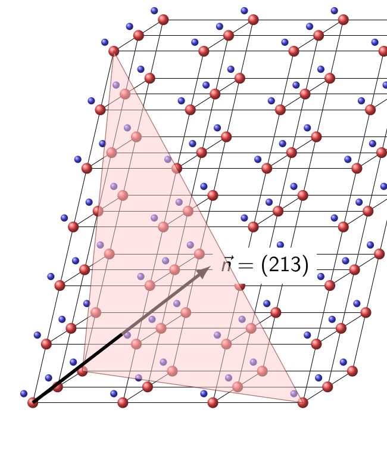

A direction in a specimen is written in specimen axes such as X, Y and Z. A direction in a crystal is written relative to its lattice axes. Direct lattice directions use square brackets \([uvw]\), while plane normals use parentheses \((hkl)\) and the reciprocal lattice.
This page shows how MTEX keeps those two meanings apart. The examples assume the spherical plots introduced in Vectors and the lattice description introduced in Crystal Symmetries.
plottingConvention.default('y↑→x');The Lattice and Its Crystal Frame
Miller indices have meaning only together with the lattice they refer to. A crystalSymmetry stores the point symmetry, lattice metric and crystal frame of a phase.
A reference frame is the coordinate system in which data are expressed. The crystal frame is the Cartesian frame fixed to the lattice basis. Its basis and default plotting convention are distinct from point symmetry.
cs = crystalSymmetry('triclinic',[5.29,9.18,9.42],...
[90.4,98.9,90.1]*degree,'X||a*','Z||c','mineral','Talc');The three direct-lattice axes are \(\vec a\), \(\vec b\) and \(\vec c\). Their display identifies them as direct coordinates.
directAxes = [cs.aAxis,cs.bAxis,cs.cAxis]directAxes = Miller (Talc)
size: 1 × 3
u v w
1 0 0
0 1 0
0 0 1Talc is triclinic, so the axes are not mutually perpendicular. The angle between \(\vec a\) and \(\vec c\) is the unit-cell angle \(\beta=98.9^\circ\).
metricAngleAC = angle(directAxes(1),directAxes(3),'noSymmetry') ./ degreemetricAngleAC =
98.9000The 'noSymmetry' option is essential when reading a metric angle. Without it, angle compares symmetry-equivalent directions. Inversion would replace \(\vec c\) by \(-\vec c\) here and return \(81.1^\circ\).
Direct-Lattice Directions \([uvw]\)
A direct-lattice vector is an integer combination of the lattice axes,
\[\vec m=u\vec a+v\vec b+w\vec c.\]
Its direction is written \([uvw]\). In MTEX it is represented by a Miller with display style 'uvw'.
m = Miller(1,0,1,cs,'uvw')m = Miller (Talc)
u v w
1 0 1The u v w column header in the output identifies a direct-lattice direction. The spherical plot places it beside the three direct axes, and labels it \([101]\).
plot(m,'labeled','grid')
annotate(directAxes,'label',{'a','b','c'},...
'backgroundColor','w','textAboveMarker')
The marker is the direction of \(\vec a+\vec c\). The labelled axes show how its position must be read in this non-orthogonal lattice.
A plotting convention controls how a reference frame is laid out on screen. Changing it does not rotate the direction or alter its indices.
% point the a-axis east in this crystal frame
cs.frame.how2plot.east = cs.aAxis;
plot(m,'labeled','grid')
annotate(directAxes,'label',{'a','b','c'},...
'backgroundColor','w','textAboveMarker')
The second plot contains the same direction in the same crystal. Only the screen layout changed: the a-axis now points east.
Lattice-Plane Normals \((hkl)\)
A lattice plane is represented by its normal in the reciprocal basis,
\[\vec n=h\vec a^*+k\vec b^*+\ell\vec c^*.\]
Its Miller indices are written \((hkl)\). The reciprocal basis is developed in Lattice Metric and Plane Geometry. Miller(h,k,l,cs) uses 'hkl' by default, but the explicit flag makes the distinction visible in teaching code.
n = Miller(1,0,1,cs,'hkl')n = Miller (Talc)
h k l
1 0 1A plane normal plots as a point. The option 'plane' instead draws the great circle of directions perpendicular to that normal.
hold on
plot(n,'upper','labeled')
plot(n,'plane','linecolor','r','linewidth',2,'add2all')
hold off
The red great circle represents the plane orientation. The labels also show that \((101)\) and \([101]\) occupy different points on the sphere.
Why \([101]\) and \((101)\) Are Not the Same Direction
The objects above carry the same three numbers but use different bases. Their geometric angle is
directReciprocalAngle = angle(m,n,'noSymmetry') ./ degreedirectReciprocalAngle =
31.6762The result is about \(31.7^\circ\). Direct and reciprocal axes are parallel in every orthogonal lattice, including orthorhombic, tetragonal and cubic lattices. They generally are not parallel in a non-orthogonal lattice.
Cubic examples therefore hide this distinction: \([hkl]\) happens to be parallel to the normal of \((hkl)\). MTEX still records whether a Miller object represents direct or reciprocal coordinates.
Four-Index Notation for Trigonal and Hexagonal Lattices
Trigonal and hexagonal lattices are commonly described with three equivalent basal axes. Four-index notation makes their cyclic symmetry visible. Plane normals use Bravais–Miller indices \((hkil)\), where \(h+k+i=0\).
Direct directions use the related UVTW convention, where \(U+V+T=0\). The conversion between UVTW and uvw is not simply the removal of the redundant third coordinate.
cs = loadCIF('quartz');
% a four-index direct direction
m = Miller(2,1,-3,1,cs,'UVTW')m = Miller (Quartz)
U V T W
2 1 -3 1% a four-index plane normal
n = Miller(1,1,-2,3,cs,'hkil')n = Miller (Quartz)
h k i l
1 1 -2 3plot(m,'upper','labeled','backgroundColor','white','grid','on')
hold on
plot(n,'upper','labeled')
hold off
The square- and round-bracket labels identify the two meanings at a glance. The four basal indices also expose the required zero sums.
Display Style Does Not Change the Direction
The dispStyle property selects how an existing object is displayed. It does not change its Cartesian direction. Displaying the direct direction above in three-index form produces fractional coordinates.
m.dispStyle = 'uvw';
mThreeIndex = mmThreeIndex = Miller (Quartz)
u v w
1.6667 1.3333 0.3333 round rescales the same direction to an equivalent small integer triplet.
mIntegerIndices = round(mThreeIndex)mIntegerIndices = Miller (Quartz)
u v w
5 4 1The output is \([541]\). The rescaling preserves the direction but not the vector length, so keep the original scale when a lattice translation or Burgers-vector length matters.
For the reciprocal normal, the three-index display simply removes the redundant \(i\) coordinate.
n.dispStyle = 'hkl';
nThreeIndex = nnThreeIndex = Miller (Quartz)
h k l
1 1 3Internally, each Miller stores Cartesian components like a vector3d. Its crystal frame and dispStyle retain how those components should be interpreted and displayed. A direct vector stays direct when switching from UVTW to uvw, and a reciprocal normal stays reciprocal when switching from hkil to hkl.
The Maths Behind Plane Indices
A member of the \((hkl)\) plane family has equation
\[\vec x\mathbin{\cdot}\vec n=q.\]
Its fractional intercepts on \(\vec a\), \(\vec b\) and \(\vec c\) are \(q/h\), \(q/k\) and \(q/\ell\). A zero index gives an infinite intercept, so the plane is parallel to that direct axis.
In the schematic, the \((213)\) plane is drawn with \(q=6\). It meets the axes at \(3\vec a\), \(6\vec b\) and \(2\vec c\). Its normal is \(2\vec a^*+\vec b^*+3\vec c^*\).

Notice that the normal follows reciprocal axes, while the plane intercepts are measured along direct axes.
Multiplying all indices by a common factor leaves the plotted normal direction unchanged, but it changes the reciprocal-vector length. Consequently, \((200)\) has half the dspacing of \((100)\). Conventional Miller indices are usually reduced to relatively prime integers, with additional care required for centred cells and diffraction reflections.
References
- The International Union of Crystallography, Miller indices, defines direct-space intercepts, reciprocal normals and Bravais–Miller notation.
- U. Shmueli, Reciprocal space in crystallography, International Tables for Crystallography B, ch. 1.1, 2006, develops reciprocal bases and lattice-plane families.
- C. Hammond, The Basics of Crystallography and Diffraction, 4th ed., Oxford University Press, 2015, gives an introductory treatment of directions, planes and zone axes.
- M. Nespolo, The rise and fall of Weber indices, Journal of Applied Crystallography 51, 1221–1225, 2018, explains the distinction between four-index plane and direction notation.
Next
Lattice Metric and Plane Geometry adds lengths and interplanar spacings. Operations introduces equivalent direction families, angles, incidence tests and zone axes. Reference System explains how the lattice axes are embedded in the Cartesian crystal frame.
Citing this page.
This page is part of the documentation of
MTEX, a free and open
source MATLAB toolbox for analyzing and modeling crystallographic textures.
It was written by The MTEX Developers and is published at
https://mtex-playground.github.io/CrystalDirections.html.
If you use MTEX, or reuse text or figures from this page, in your research,
please cite
F. Bachmann, R. Hielscher, H. Schaeben: Texture Analysis with MTEX - Free and Open Source Software Toolbox, Solid State Phenomena 160 (2010), 63-68. 10.4028/www.scientific.net/SSP.160.63
BibTeX
@article{bachmann2010mtex,
author = {F. Bachmann and R. Hielscher and H. Schaeben},
title = {Texture Analysis with MTEX - Free and Open Source Software Toolbox},
journal = {Solid State Phenomena},
volume = {160},
pages = {63-68},
year = {2010},
doi = {10.4028/www.scientific.net/SSP.160.63},
url = {https://doi.org/10.4028/www.scientific.net/SSP.160.63}
}Other papers describing specific MTEX methods are listed under Publications — please cite the one that best fits your application. The MTEX source code is licensed under the GNU General Public License v2.0; the text and figures of this documentation are licensed under CC BY 4.0, which permits reuse — including by automated systems — provided The MTEX Developers and this page are credited.